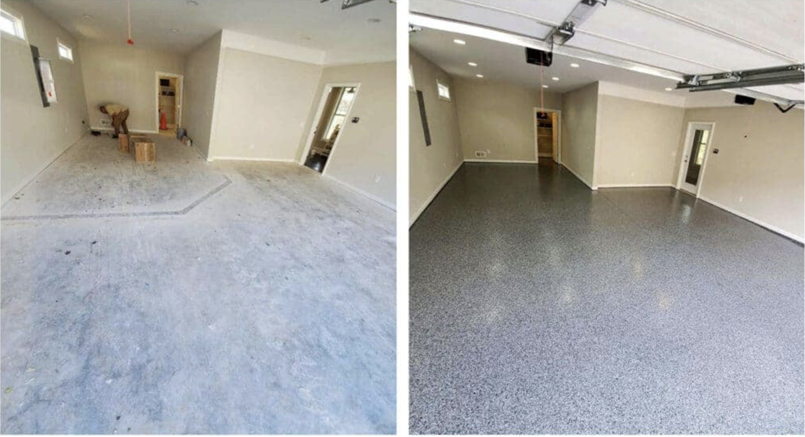

What We Do
Epoxy Flooring Services for Fayetteville, AR Homes and Businesses
We install floor coating systems for three primary applications in the Fayetteville area. Each uses a different system because each environment has different demands. Below is a plain-English breakdown of what’s involved in each.

Garage Floor Epoxy Coating
Cracked, stained concrete is one of the most common complaints we hear from homeowners in Fayetteville. A full garage floor coating system—epoxy base coat plus polyaspartic topcoat and decorative flakes—transforms a worn slab into a surface that looks better and cleans up in minutes.
We moisture-test every slab before we start. Hot-tire pickup and peeling are almost always caused by skipping this step or using an inferior single-coat system. We don’t do either.
Learn more about garage floor epoxy in Fayetteville →
Call us today for garage floor epoxy in Fayetteville, AR.

Basement Floor Epoxy Coating
Basements in Fayetteville and throughout NWA sit in contact with soil that retains moisture from the region’s frequent rain. That moisture pushes upward through concrete as vapor, and it’s the primary reason basement coatings fail. We test vapor emission rates before recommending a system and use moisture-tolerant coatings when readings are elevated.
Finished basements, home gyms, and workshop spaces are the most common applications. The coating eliminates concrete dust, makes the floor washable, and significantly brightens the space with its reflective finish.
Learn more about basement floor epoxy in Fayetteville →
Call us today for basement epoxy flooring in Fayetteville, AR.

Commercial & Industrial Epoxy Flooring
Commercial floors in Fayetteville take more abuse than residential ones — forklifts, foot traffic, chemical spills, and cleaning equipment all hit harder and more often. We install high-build epoxy systems and polyurea broadcast floors rated for industrial use in warehouses, auto shops, commercial kitchens, and retail spaces across Northwest Arkansas.
Turnaround time matters in commercial settings. Many polyaspartic systems we use are back in service the same day, which minimizes business disruption.
Learn more about commercial epoxy flooring in Fayetteville →
Call us today for commercial epoxy flooring in Fayetteville, AR.